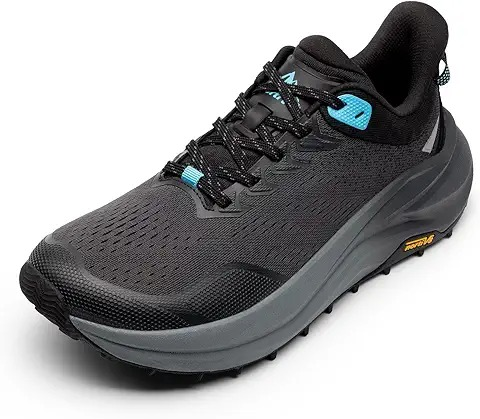
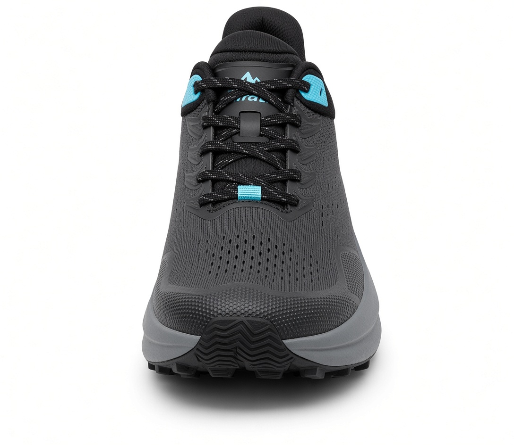
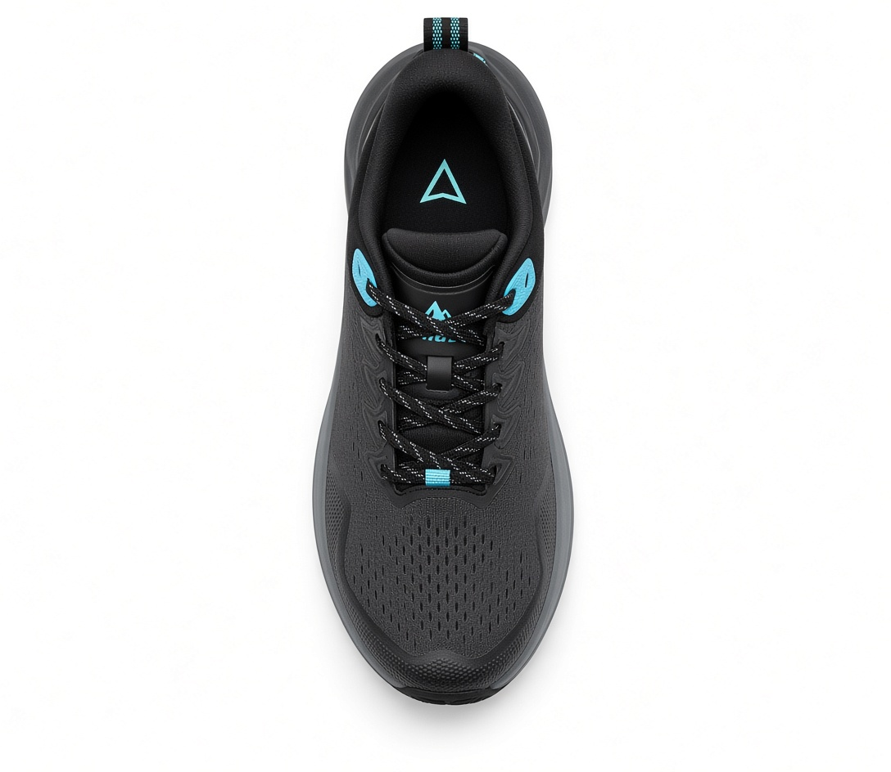
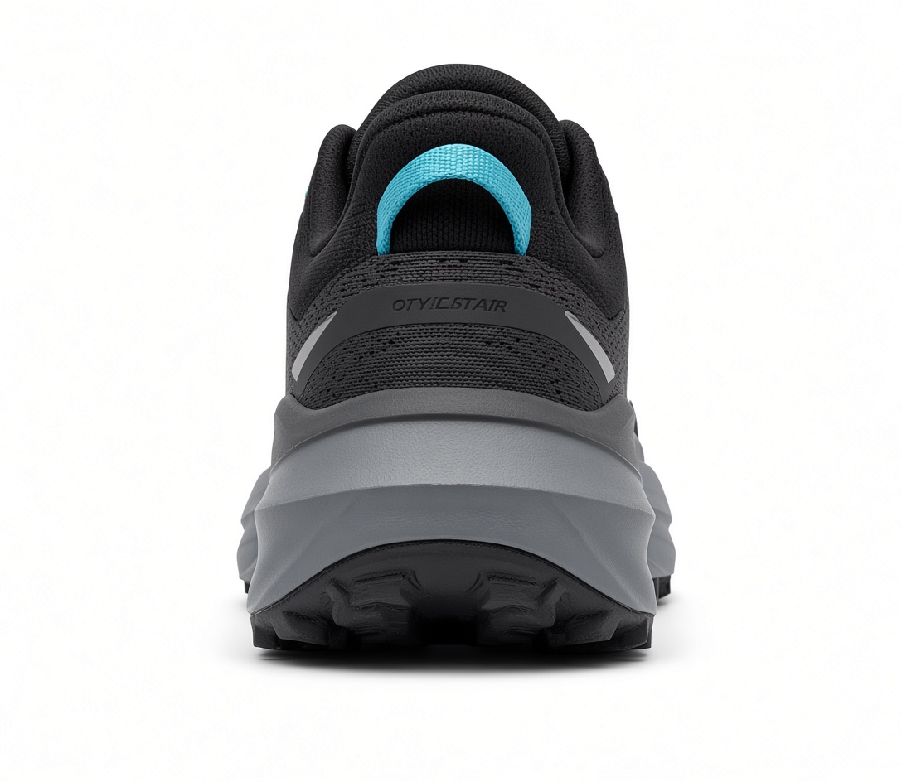

Zapatilla Nortiv 8 Pro
s/200.00
Talla
descripcion
las Nortiv 8 pro son zapatillas de trail y senderismmo diseñadas para ofrecer la maima resitencia y confort en caminatas al aire libre. Su constucción ligera pero robusto cuenta con una parte superior de malla transpirable reforzada que protege tus pies contra rocas y ramas. la entresuela absorve eficazmente los impactos, reduciendo la fatiga en los pies, mientras que su suela de goma con tacos multidireccionalews asegura un agarre firme en caminos de tierra, piedra suela o superficies resbaladizas.